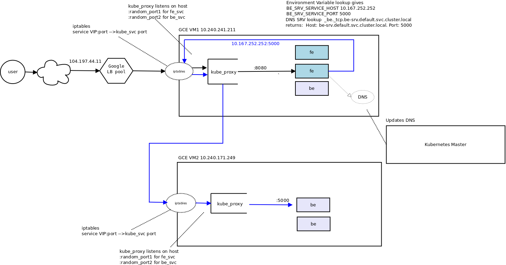
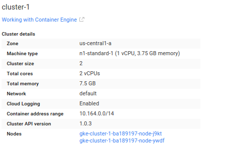
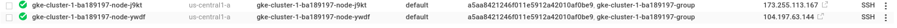
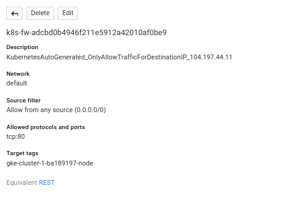
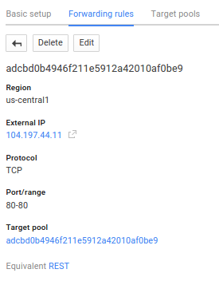
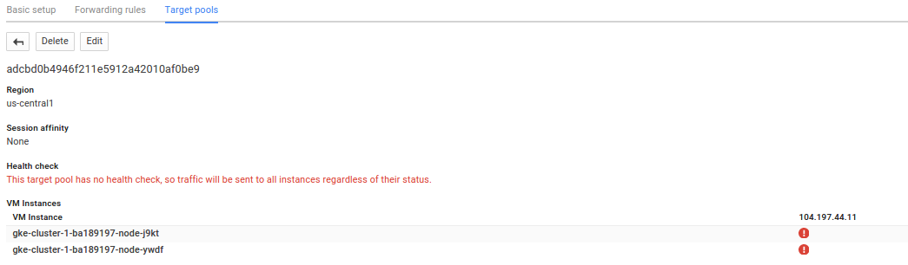
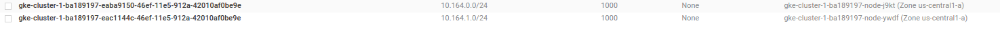
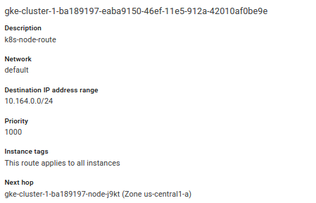
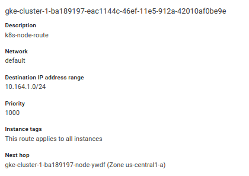

ARTICLES
Kubernetes Services HelloWorld
NOTE: 12/20/19: While this demo will work, its quite dated (i wrote is this ‘16..there are much more comprehensive articles that cover this..)
Anyway…
Sample application that deploys a trivial Kubernetes service to connect a frontend system (fe) with a backend (be).
This is merely to demonstrate Kubernetes service discovery in Google Container Engine (GKE), nothing more and is based off the guestbook service example.
Parts of this sample code is from the default kubernetes ‘environment-guide’ example.
From kubernetes environment guide Example
HTTP requests to the frontend handler causes a service lookup for the backend and retrieves some data from the backend.
user –> loadbalancer –> frontend –> lookup backend service –> make backend API call –> return data to fronend –> return web page to user showing some data from the backend.
####Frontend/backend Services
The frontend consists of a golang program that listens for http requests on port :8080. It is wrapped in the container
The frontend service is configured to startup 2 replicas inside a Loaldbalanced Kubernetes service:
Frontend #####Replication Controller
apiVersion: v1
kind: ReplicationController
metadata:
name: fe-rc
labels:
type: fe-type
spec:
replicas: 2
template:
metadata:
labels:
type: fe-type
spec:
containers:
- name: fe-container
image: salrashid123/fe
imagePullPolicy: IfNotPresent
ports:
- containerPort: 8080
protocol: TCP
env:
- name: USER_VAR
value: important information
- name: POD_NAME
valueFrom:
fieldRef:
fieldPath: metadata.name
- name: POD_NAMESPACE
valueFrom:
fieldRef:
fieldPath: metadata.namespace
#####Frontend Service Definition
apiVersion: v1
kind: Service
metadata:
name: fe-srv
labels:
type: fe-type
spec:
type: LoadBalancer
ports:
- name: fe
port: 80
protocol: TCP
targetPort: 8080
selector:
type: fe-type
####Backend
The backend consists of another golang program which for http requests on port :5000. It is wrapped in the container
Backend uses the advertises the label be-type
#####Replication Controller
---
apiVersion: v1
kind: ReplicationController
metadata:
name: be-rc
labels:
type: be-type
spec:
replicas: 3
template:
metadata:
labels:
type: be-type
spec:
containers:
- name: be-container
image: salrashid123/be
imagePullPolicy: Always
ports:
- containerPort: 5000
protocol: TCP
env:
- name: POD_NAME
valueFrom:
fieldRef:
fieldPath: metadata.name
- name: POD_NAMESPACE
valueFrom:
fieldRef:
fieldPath: metadata.namespace
#####Backend Servce Definition
apiVersion: v1
kind: Service
metadata:
name: be-srv
labels:
type: be-type
spec:
ports:
- name: be
port: 5000
protocol: TCP
selector:
type: be-type
Discovery
Once a request hits any pod running the frontend service, the front end attempts to discover how to connect to the backend service. This is done in two ways: using environment variables or (preferably), by DNS SRV lookups.
Each node in the cluster runs a local DNS server.
Also see Kubernetes networking
Environment Variables
backendHost := os.Getenv("BE_SRV_SERVICE_HOST")
backendPort := os.Getenv("BE_SRV_SERVICE_PORT")
backendRsp, backendErr := http.Get(fmt.Sprintf(
"http://%v:%v/",
backendHost,
backendPort))
if backendErr == nil {
defer backendRsp.Body.Close()
}
DNS SRV
cname, rec, err := net.LookupSRV("be", "tcp", "be-srv.default.svc.cluster.local")
if err != nil {
http.Error(resp, err.Error(), http.StatusInternalServerError)
}
fmt.Fprintf(resp, "SRV CNAME: %v\n", cname)
for i := range rec {
fmt.Fprintf(resp, "SRV Records: %v \n", rec[i])
DNSbackendHost = rec[i].Target
DNSbackendPort = strconv.Itoa(int(rec[i].Port))
}
###Create Test Cluster Create the cluster with two nodes in us-central1-a using either gcloud or the Cloud Console
gcloud config set compute/zone us-central1-a
gcloud beta container clusters create cluster-1 --num-nodes 2
gcloud compute instances list
NAME INTERNAL_IP EXTERNAL_IP STATUS
gke-cluster-1-ba189197-node-j9kt 10.240.241.211 173.255.113.167 RUNNING
gke-cluster-1-ba189197-node-ywdf 10.240.171.249 104.197.63.144 RUNNING
###Create Replication Controllers and Services
Run thefollowing to create the frontend/backend replication controllers and services.
kubectl create -f be-rc.yaml
kubectl create -f be-srv.yaml
kubectl create -f fe-rc.yaml
kubectl create -f fe-srv.yaml
####List the nodes
kubectl get no
NAME LABELS STATUS
gke-cluster-1-ba189197-node-j9kt kubernetes.io/hostname=gke-cluster-1-ba189197-node-j9kt Ready
gke-cluster-1-ba189197-node-ywdf kubernetes.io/hostname=gke-cluster-1-ba189197-node-ywdf Ready
####List the pods
kubectl get po
NAME READY STATUS RESTARTS AGE
be-rc-ekpb7 1/1 Running 0 2m
be-rc-mud4n 1/1 Running 0 2m
be-rc-qo453 1/1 Running 0 2m
fe-rc-0yv6u 1/1 Running 0 2m
fe-rc-2plu0 1/1 Running 0 2m
####List the replication controllers
kubectl get rc
CONTROLLER CONTAINER(S) IMAGE(S) SELECTOR REPLICAS
be-rc be-container salrashid123/be type=be-type 3
fe-rc fe-container salrashid123/fe type=fe-type 2
####List the services
kubectl get svc
NAME LABELS SELECTOR IP(S) PORT(S)
be-srv type=be-type type=be-type 10.167.252.252 5000/TCP
fe-srv type=fe-type type=fe-type 10.167.249.76 80/TCP
104.197.44.11
kubernetes component=apiserver,provider=kubernetes 10.167.240.1 443/TCP
The above shows the service IP addresses. Since we’re running this on GKE, it will also create a provider-specific commands to generate a public IP, loadbalancer, filewall rules.
The public IP assigned to our Frontend Loadblancer is: 104.197.44.11
###Test the GKE cluster The frontend service is available 104.197.44.11:80 so an invocation shows:
curl http://104.197.44.11/
SRV CNAME: _be._tcp.be-srv.default.svc.cluster.local.
SRV Records: &{be-srv.default.svc.cluster.local. 5000 10 100}
Pod Name: fe-rc-0yv6u
Pod Namespace: default
USER_VAR: important information
Kubenertes environment variables
BE_SRV_SERVICE_HOST = 10.167.252.252
BE_SRV_SERVICE_PORT = 5000
KUBERNETES_SERVICE_HOST = 10.167.240.1
KUBERNETES_SERVICE_PORT = 443
Found ENV lookup backend ip: 10.167.252.252 port: 5000
ENV Lookup Response from backend
BACKEND Response
Found DNS lookup backend ip: be-srv.default.svc.cluster.local. port: 5000
DNS Lookup Response from backend
BACKEND Response
The above output is from the frontend and shows the backend discovery by both environment variables and DNS SRV. The response from the backend is just the part BACKEND Response.
The output shows the frontend discovered the backend using envionment variables IP address/port values: 10.167.252.252:5000
The output also shows the DNS SRV request contained the host and port to connect to from the frontend: be-srv.default.svc.cluster.local. port: 5000
###Call Flow The following shows the call flow between the the frontend and backend.
For a detailed description of the proxy and VIPs, see Kubernetes Services

###Automatic configuration on GKE The firwall, network configuration created for this example are:








###Extending the sample If you want to extend the sample, the easiest way is to build the sample an push it to your public dockerhub area where kubernetes can download it.
Remember to rename the image section to whatever you taged to it.
You can, ofcourse use Google Container Registry